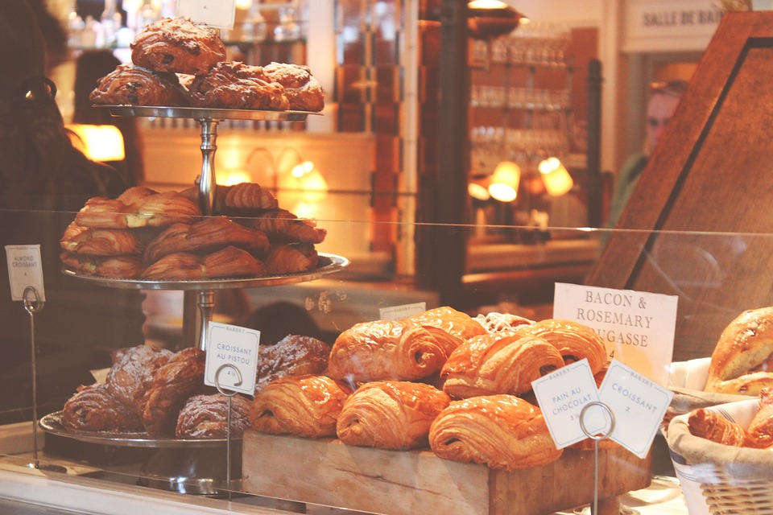

Tervetuloa leivontablogiini!
Tämä sivusto on omistettu kaikelle herkulliselle ja makealle, ja täällä jaan parhaat reseptini ja vinkkini leivontaan liittyen.
Olen intohimoinen kotileipuri ja rakastan kokeilla uusia reseptejä ja luoda omia versioita perinteisistä leivonnaisista. Täällä jaan omat suosikkireseptini ja jaan vinkkejä, joilla saat leivonnaiset onnistumaan joka kerta.
Sivusto on uusi, joten olen avoin uusille ideoille ja innolla kuulen, mitä te haluaisitte minun kokeilevan seuraavaksi. Älä siis epäröi jakaa omia leivontatoiveitasi ja -ideoitasi!
Toivottavasti nautit sivustostani ja löydät paljon inspiraatiota omaan leivontaan. Kiitos, kun käyt leivontablogissani!